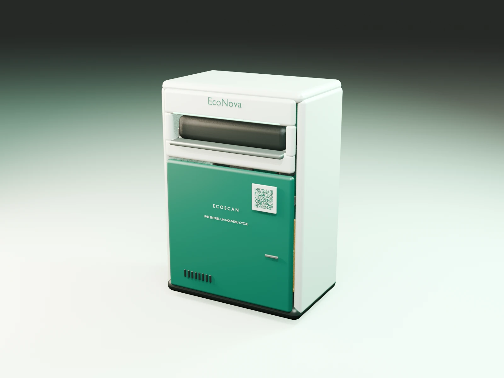
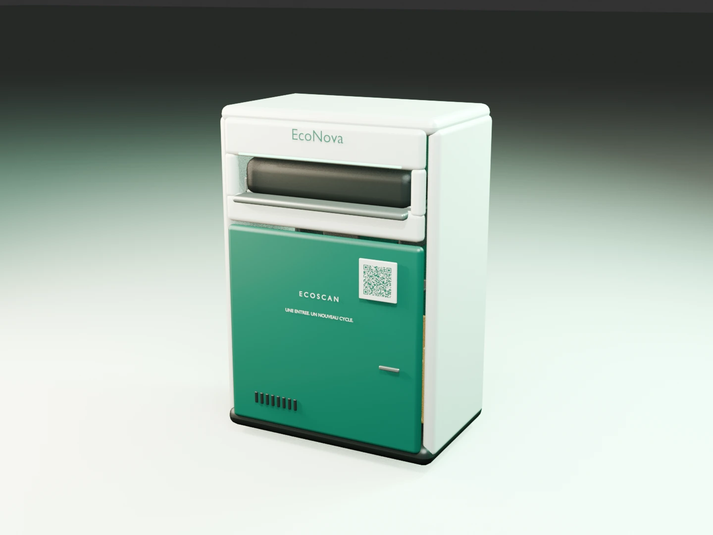
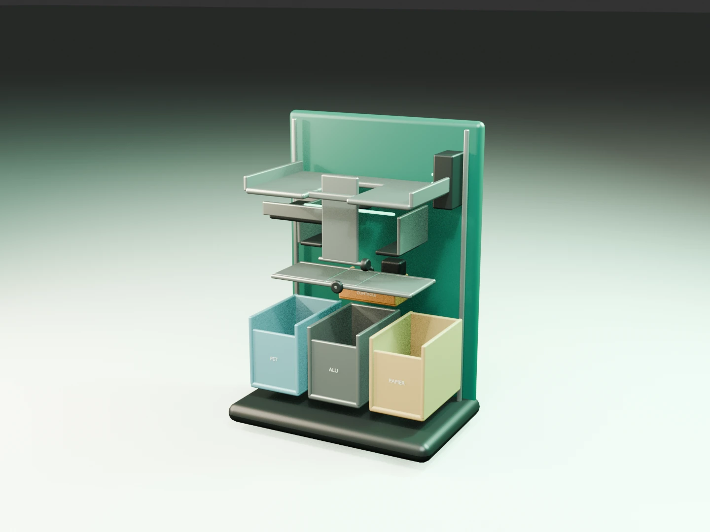
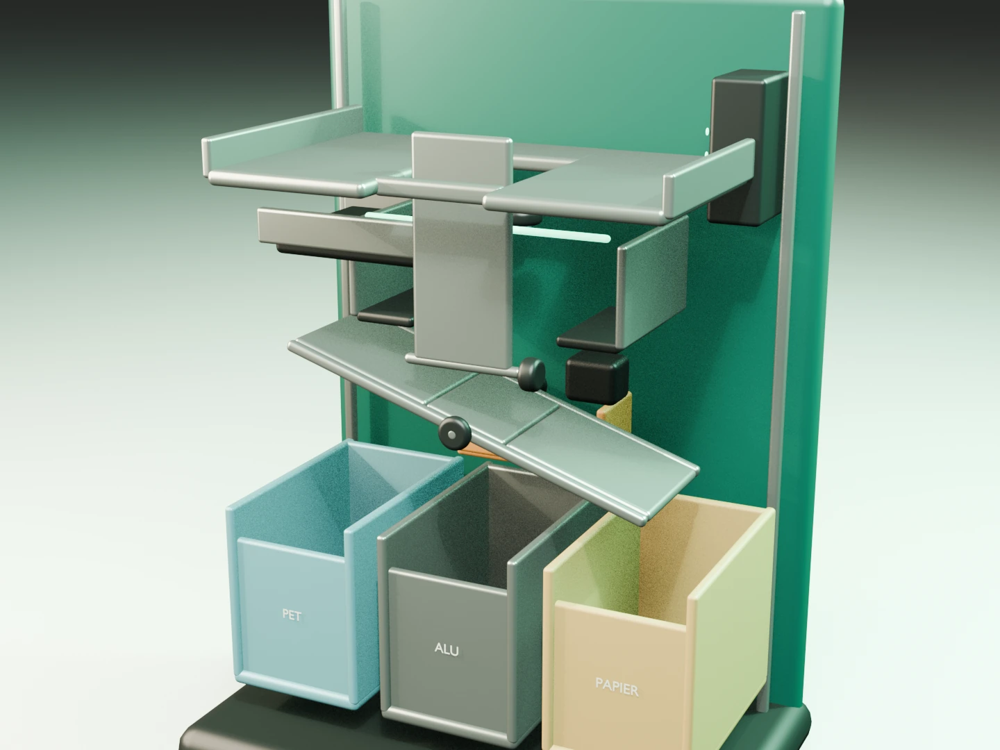
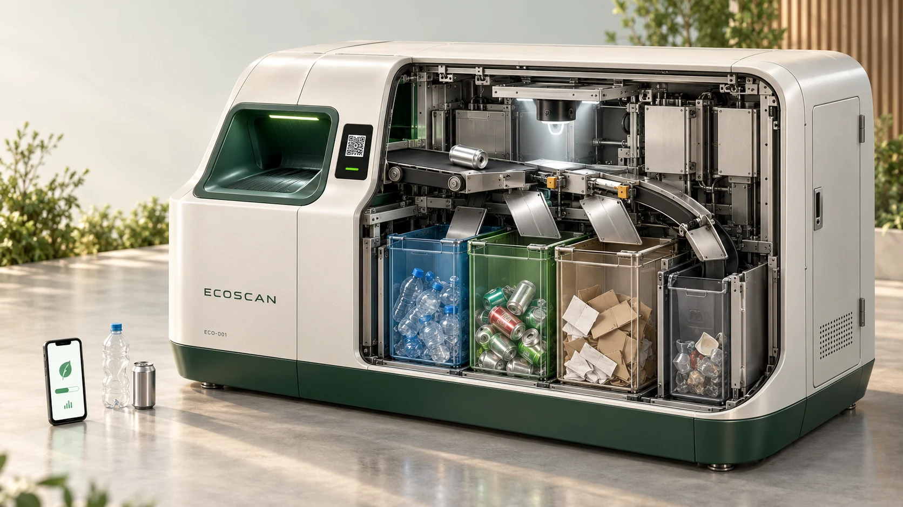

Une ouverture commune.
Déposer les recyclables acceptés sans choisir un bac. Le concept doit ensuite isoler, reconnaître et orienter les objets.
Vous déposez. ÉcoNova trierait.
Une entrée commune, des matières séparées à l’intérieur, et une expérience pensée pour rendre le geste plus simple.
Projet académique indépendant. Matériel, reconnaissance et portefeuille connecté restent à développer et à tester.

EcoScan propose de simplifier le dépôt, pas d’effacer la complexité des matériaux. Notre mission : rendre le bon geste plus simple et la fin de vie des objets plus transparente — en réduisant d’abord, puis en triant ce qui reste.
Déposer les recyclables acceptés sans choisir un bac. Le concept doit ensuite isoler, reconnaître et orienter les objets.
Contrôler les matières incertaines au lieu de promettre un tri infaillible. Le refus fait partie d’un système responsable.
Les points seraient un soutien pédagogique. La prévention, le réemploi et la qualité des filières restent les objectifs.
Transformer une hésitation en apprentissage, puis mesurer si la solution aide vraiment. Voici le parcours envisagé pour une future application ; ce site en propose une simulation pédagogique.
Scanner le QR code de la poubelle depuis l’app ouvrirait une session. À l’intérieur, des capteurs identifieraient les objets déposés. Ici, connexion et identification sont simulées.
Une ouverture commune recevrait les recyclables et un aiguillage interne les dirigerait vers des compartiments séparés. Le mécanisme et la vérification du routage restent à développer et à tester.
Des EcoPoints pourraient encourager la participation. Le concept prévoit un portefeuille lié à la session sur la poubelle. Les points de cette page sont fictifs et ne donnent droit à aucune récompense réelle.
Trois gestes, sans inscription : connectez la station fictive, choisissez ou glissez un objet et observez le tri. Le téléphone de démonstration reçoit des points locaux après validation. Aucun bac à choisir, aucune vraie caméra, aucun dépôt réel mesuré.
Commencez par une connexion de démonstration.
Glissez un objet vers l’ouverture, ou sélectionnez-le puis utilisez le bouton de dépôt au clavier ou au tactile. Ces objets alimentent uniquement la simulation.
Connectez d’abord le téléphone de démonstration.
Une visite guidée de 1 min 32 avec voix off française : entrez sous la coque, observez les plaques s’orienter, puis suivez les matières jusqu’aux compartiments. Musique discrète, plans rapprochés et sous-titres accompagnent l’explication. Film de concept 3D ; aucun équipement réel ni performance matérielle mesurée.
Lancez le film pour entendre la voix française de synthèse. Les sous-titres sont activables avec le lecteur ; la narration complète se lit ci-dessous. Pause, volume et vitesse restent sous votre contrôle, sans démarrage automatique.
ÉcoNova est une seule poubelle : vous vous connectez à la station depuis l’app, puis vous déposez vos recyclables dans une ouverture commune. La machine envisagée les identifie et les trie dans des compartiments internes, sans vous demander de choisir un bac.
Vue en coupe : les bacs internes sont montrés pour expliquer le concept, pas pour déposer séparément les déchets.



Incertitude → contrôle isolé à l’arrière
UNE SEULE POUBELLE POUR L’UTILISATEUR · LES COMPARTIMENTS SONT À L’INTÉRIEUR
Choisissez un repère pour lire son rôle et ses limites.

Ce blueprint reprend le modèle compact du film : même coque, même entrée et mêmes compartiments. Les plaques s’inclineraient vers le PET ou le papier ; la trappe centrale desservirait l’aluminium et un volet arrière isolerait l’incertain. Cette géométrie reste une proposition à prototyper, sans dimension de fabrication validée. Le schéma vectoriel téléchargeable en précise les étapes. La reconnaissance en 5 ms est une cible non démontrée ; elle ne représente pas le temps de séparation, de tri mécanique ou de transfert des points.
Comme lorsqu’on démarre une session sur un vélo partagé, l’utilisateur scannerait le QR code propre à la poubelle avec l’app EcoScan. Une session temporaire relierait les dépôts au bon portefeuille, puis se fermerait pour éviter d’attribuer les déchets du suivant.
Vous utilisez une seule ouverture. Un mécanisme devrait séparer les objets, les présenter aux capteurs puis actionner un aiguillage vers le compartiment adapté. Pour un dépôt mélangé, la séparation des objets est une étape essentielle à prototyper ; un sac entier ne peut pas être supposé analysé instantanément.
Après confirmation du dépôt et du routage, la station enverrait un événement unique au portefeuille de l’app. L’identifiant de cet événement éviterait les doubles crédits. L’utilisation des points demanderait un catalogue et des accords de récompense ; aucun n’existe actuellement.

Le modèle compact reste la référence de ce site, du blueprint et du film. Cette première silhouette plus large est conservée comme piste pour des lieux plus fréquentés.
Agrandir ne suffit pas : volume utile, accessibilité, débit, sécurité et collecte demanderaient une conception et des essais propres à cette variante. Aucun grand format n’est construit ni dimensionné.
C’est l’ambition du concept. Il faudrait préciser ce qui est chronométré et mesurer la précision sur des déchets réels. La capture, la séparation d’un mélange, l’analyse, le mouvement mécanique et l’envoi des points ont des durées distinctes. Cette démo ne mesure aucune de ces performances.
Manipulez le niveau du compartiment cible et la connexion pour tester les limites du parcours. Seul un compartiment nécessaire au scénario empêche le dépôt lorsqu’il est plein. Le mélange nécessite les trois compartiments. Aucune mesure ni alerte réelle n’est transmise.
Ce dessin n’est pas un plan de fabrication. Dimensions, accessibilité physique, sécurité, résistance au feu, nettoyage et compatibilité avec les filières doivent être validés avant tout prototype installé.
Le QR code appartient à la station. Il sert à trouver la bonne poubelle et à ouvrir sa page ; il ne reconnaît pas les déchets et ne prouve pas un dépôt.
Ce QR fonctionne réellement : il ouvre ce site public sur votre téléphone. La station et la session restent fictives. Les points sont propres à chaque navigateur ; aucun compte ou transfert entre appareils.
Ouvrir la station de démonstrationTélécharger le QR de démonstrationUne étiquette indique son identifiant, les matières acceptées et l’adresse officielle. Le QR envisagé contiendrait une URL, jamais une clé secrète ni une autorisation de recevoir des points.
Dans une vraie app, vérifier que l’identifiant affiché correspond à celui de la poubelle, puis confirmer la connexion. Un QR copié à distance ne devrait pas suffire à prouver la présence : une confirmation locale sécurisée resterait à concevoir.
La machine devrait confirmer le passage et le routage d’un objet, puis émettre un événement unique lié à la session. Les capteurs, la protection contre le rejeu et la clôture automatique demanderaient un prototype.
Un portefeuille réel demanderait un service authentifié et des règles d’attribution. Ici, le crédit est seulement local et l’échange est fictif. Un vrai catalogue dépendrait d’offres et d’accords confirmés.
Prévoir une étiquette résistante, vérifiable et remplaçable. Un sticker frauduleux ne doit pas rediriger vers un faux service. Afficher l’adresse et l’identifiant en clair ; conserver un parcours sans smartphone pour les gestes de tri.
Une seule ouverture ne signifie pas une seule opération. Le système envisagé doit organiser la matière, prendre une décision et vérifier l’action. Chaque étape peut échouer et doit pouvoir être arrêtée ou corrigée.
Recevoir les recyclables autorisés et séparer les éléments d’un mélange. Les objets imbriqués, liquides et sacs fermés sont des difficultés à traiter.
Éclairer un objet isolé et combiner des capteurs adaptés. Une image peut aider à reconnaître une forme ; elle ne certifie pas toutes les compositions.
Comparer le résultat aux filières locales configurées. En dessous d’un seuil de confiance à établir, orienter vers le contrôle au lieu de deviner.
Positionner les plaques latérales, la trappe centrale ou le volet arrière, puis libérer l’objet. Vérifier la position et le passage ; un moteur bloqué doit arrêter le cycle.
Vérifier le passage, émettre un événement unique et maintenir la séparation des flux jusqu’à la collecte. Les points viennent après cette confirmation.
Empêcher l’accès aux pièces mobiles, détecter les obstructions et prévoir une mise en sécurité. Une coupure électrique ou un moteur bloqué nécessite une procédure de maintenance, pas un crédit automatique.
Étudier des modules démontables, un accès verrouillable, un nettoyage fréquent et le remplacement des éléments usés. La réparabilité doit faire partie du prototype.
Identifier les bacs intérieurs et convenir de filières adaptées avec l’exploitant. Un tri automatique sans collecte cohérente ne démontre aucun bénéfice.
Le site et les QR peuvent être réalisés aujourd’hui. Une poubelle qui trie réellement nécessite du matériel, des essais et un budget. La cible de 5 ms doit être étudiée séparément du cycle mécanique complet.
Site statique, QR vers la page, parcours interactif et portefeuille local fictif. Cela démontre une expérience, pas les capacités d’un robot.
Choisir les capteurs, isoler les déchets, tester l’aiguillage, limiter les blocages et observer la contamination. Commencer avec un périmètre limité de matières.
Sécurité, accessibilité, collecte, énergie, maintenance, protection des données et éventuel portefeuille connecté. Aucun coût ou rendement n’est validé.
Modifiez des hypothèses pour comparer un flux d’arrivée à une capacité théorique. Ce calcul simplifié ignore les pics, les pannes, la distribution des matériaux et la séparation des mélanges. Il ne dimensionne pas une machine réelle.
Calcul : 60 ÷ durée du cycle × disponibilité. Toutes les entrées sont des hypothèses fictives. Aucune mesure matérielle, de latence IA ou d’économie de CO₂.
La première décision est un périmètre, pas un lancement. Étudier d’abord les bouteilles de boisson PET et les canettes connues. Le papier et les autres matières restent des scénarios de conception tant que la mécanique et les filières ne sont pas confirmées.
Rencontrer usagers et équipes de collecte. Documenter les hésitations et les flux existants. Tester la signalétique et la démo, sans installer de matériel.
Livrable : besoin documentéConstruire un banc fermé : présentation d’un objet, capteurs envisagés, deux filières et une zone de contrôle. Mesurer les erreurs et les blocages sur des objets connus.
Livrable : résultats répétablesÉtudier mixtures, salissures, objets imbriqués, collecte, accessibilité et mise en sécurité. Définir le nettoyage, les responsabilités et le coût complet.
Livrable : dossier d’essais et de sécuritéUn accord du lieu et une validation technique précèdent tout public. Comparer au fonctionnement actuel, publier les limites et accepter de réviser ou d’arrêter le pilote.
Livrable : décision étayéeÉtapes proposées, sans calendrier garanti ni budget inventé. Un site gratuit ne signifie pas une station gratuite à concevoir, entretenir et exploiter.
Un outil local pour préparer un premier essai. Choisissez ce que vous voulez observer : il propose des conditions, des preuves à conserver et les limites du résultat. Il ne certifie aucune machine.
Des sources expérimentales publiques éclairent le projet. Nous en retenons des méthodes, sans reprendre leurs performances ni prétendre disposer d’un système industriel.
Le projet Cost-Effective Reverse Vending Machine combine caméra, modèle TensorFlow Lite, cellule de pesée et moteurs. Il pousse à distinguer la catégorie reconnue du contrôle physique d’un dépôt.
Aucune preuve de fiabilité industrielle ou de flux mélangé n’est déduite de ce code.
Consulter l’artefact public →WALL-F utilise des modules calibrés et un capteur pour confirmer une capture. Ses essais et son démontage donnent une piste pour le développement et l’entretien.
Le projet trie des balles colorées dans une arène, pas des déchets réels.
Consulter le projet expérimental →TACO documente des déchets dans des environnements variés. Pour ÉcoNova, il faudrait constituer et évaluer un jeu de cas correspondant aux objets, à l’éclairage et aux salissures de la station.
La reconnaissance d’une image ne prouve pas sa composition ni sa recyclabilité locale.
Consulter le dataset et son article →Sources consultées le 12 octobre 2026. Les années correspondent aux artefacts ou publications indiqués, pas à une date de commercialisation. Recherche détaillée et limites dans le dossier.
Télécharger les références et leurs limitesChaque objet raconte une histoire : des matières extraites, de l’énergie utilisée, un transport et une fin de vie. Préserver les ressources commence bien avant la poubelle.
Acheter moins, choisir durable et éviter les emballages inutiles réduit les ressources mobilisées dès le départ.
Réemployer, partager et réparer prolonge la vie des objets et limite la demande de nouvelles matières.
Le recyclage permet de récupérer certaines matières. Il dépend de filières adaptées et ne remplace pas la réduction de la consommation.
Des emballages composites et des consignes variables rendent le tri difficile. Un objet mal orienté peut perturber une filière : la signalétique locale reste la référence.
Sans état initial ni observations comparables, on ne sait pas si une campagne améliore les pratiques. Des mesures agrégées pourraient éclairer les progrès.
Des gestes simples, un retour pédagogique et des défis collectifs pourraient aider à ancrer une habitude sans culpabiliser.
Emporter une gourde, demander une portion adaptée à son appétit et imprimer seulement lorsque nécessaire.
Choisir un contenant réutilisable, échanger ses livres et emprunter le matériel peu utilisé.
Entretenir son vélo et ses appareils ; rechercher un atelier de réparation avant de remplacer un objet.
Séparer les matières lorsque la filière le demande et suivre les indications affichées sur place.
La technologie n’a de sens que si elle rend le geste plus compréhensible. Notre ambition : relier consommation consciente, responsabilité quotidienne et action collective, en commençant à une échelle où l’on peut apprendre et corriger.
Nous imaginons une technologie qui rend les gestes durables plus simples, sans faire oublier l’essentiel : consommer moins, faire durer les objets et préserver les ressources. Une station ne sauve pas le monde à elle seule. Une habitude partagée peut ouvrir le chemin.
Le concept ÉcoNova rassemble le dépôt dans une ouverture commune. La complexité du tri serait prise en charge à l’intérieur, avec un contrôle des matériaux incertains.
La communauté UNIL constitue le public proposé pour une campagne académique. Écouter ses besoins et tester les usages précéderaient toute installation autorisée.
Avant toute extension, démontrer le fonctionnement, évaluer l’impact net et publier les limites. L’ambition internationale est une perspective, pas un déploiement annoncé.
À la cafétéria, à la bibliothèque ou entre deux cours, la communauté universitaire partage des lieux et des habitudes. Ces moments quotidiens offrent un terrain concret pour parler de gaspillage alimentaire, d’impressions et d’objets jetables.
EcoScan propose une campagne non lucrative destinée à la communauté de l’UNIL : affiches explicatives, QR codes vers ce site et défis étudiants. Un éventuel pilote demanderait les autorisations du campus et une coordination avec les responsables des déchets.
Projet académique indépendant : aucun partenariat officiel ni déploiement autorisé à l’UNIL n’est revendiqué.
Un projet académique peut réunir étudiants, équipes techniques et usagers autour d’une question concrète. Avant une station connectée, une campagne et un test d’usage peuvent déjà révéler les hésitations et les besoins du campus.
Tester la compréhension, l’accès à l’ouverture et le parcours avec ou sans téléphone. Une participation volontaire, informée et inclusive serait à organiser.
Discuter des filières, des contraintes de nettoyage, de circulation et de collecte. Chaque emplacement demanderait un accord ; aucun site pilote n’est attribué.
Définir un état initial, comparer les erreurs de tri et observer les déchets évités. Publier les limites et les résultats, même si l’équipement n’améliore pas la situation.
Projet académique indépendant — HEC Lausanne, Université de Lausanne. Cette proposition ne constitue pas une autorisation ni un partenariat officiel avec l’UNIL.
Une station ne se résume pas à un écran et un moteur. Elle doit être compréhensible pour les usagers, entretenue sans difficulté et raccordée au travail des équipes de collecte.
Contrôler les bacs, l’ouverture, la propreté des capteurs et les consignes. Un QR lisible devrait afficher le domaine EcoScan et l’identifiant de la station pour aider à repérer une étiquette remplacée.
Suivre les niveaux et les anomalies utiles, plutôt qu’une surveillance des personnes. Documenter les refus, les blocages et le temps d’intervention pour identifier ce qui doit être amélioré.
Identifier chaque compartiment, vérifier sa destination et consigner les anomalies. Prévoir un accès technique sécurisé et des pièces remplaçables ; les interventions sur les mécanismes exigeraient une procédure adaptée.
Parcours d’exploitation proposé. L’accès technique, la sécurité des pièces mobiles, le nettoyage, les matériaux et la collecte doivent être définis avec des professionnels avant toute utilisation publique.
Prévoir des contrastes lisibles, des mots simples, des pictogrammes et une ouverture commune accessible. Tester avec des personnes ayant des besoins différents ; ne pas s’appuyer uniquement sur la couleur ou sur un écran.
Préférer les niveaux de remplissage agrégés aux profils individuels. Les capteurs envisagés doivent observer les objets dans une zone interne, sans filmer les passants. Le lien avec un portefeuille demanderait une session sécurisée, une finalité claire et une validation de la protection des données.
Étudier des pièces remplaçables, des surfaces nettoyables et des modules réparables. Mesurer les besoins électriques et les coûts avant de choisir des capteurs ; ne pas installer de technologie sans usage concret.
Nous ne voulons pas imposer une machine parce qu’elle paraît innovante. Nous voulons vérifier si elle rend le tri plus compréhensible, conserve les matières et peut être exploitée raisonnablement.
Observer des volontaires devant une maquette et la démo. Peuvent-ils repérer les objets autorisés, lancer un dépôt et comprendre un refus sans aide ? Comparer aussi à des bacs existants accompagnés d’une meilleure signalétique.
Utiliser un ensemble d’objets défini : déformés, humides, imbriqués ou mal présentés. Mesurer le cycle entier, les erreurs, les refus et les interventions. Un modèle rapide ne suffit pas si la séparation bloque.
Si la sécurité et la faisabilité le permettent, proposer un pilote limité sous réserve d’autorisations. Comparer l’avant et l’après, la consommation d’énergie, la collecte et la maintenance. Publier aussi ce qui ne fonctionne pas.
Une contamination supérieure à la solution de référence, une maintenance disproportionnée, des objets mal pris en charge ou un bénéfice insuffisant au regard des ressources consommées. Les critères et la méthode doivent être définis avant les essais ; aucun seuil de réussite n’est présenté comme déjà validé.
EcoScan est une proposition académique d’Albin Krasniqi — HEC Lausanne, Université de Lausanne. Les compétences à réunir pour la suite sont la conception mécanique, les filières de recyclage, la sécurité, l’accessibilité et l’exploitation. Il n’existe pas d’équipe industrielle ou de partenariat revendiqué ici.
Objectif annoncé dans le PowerPoint, non mesuré ni validé.
Projection de hausse de participation du concept original, sans résultat observé.
Ambition d’extension européenne du concept, sans calendrier de déploiement acquis.
Observer les mêmes points de collecte avant et après un pilote, sur des périodes comparables : part d’objets mal triés parmi les objets observés, nombre de participants volontaires, compréhension des consignes et évolution des déchets jetables. Documenter les limites, les effectifs et les changements de contexte ; publier des résultats agrégés sans identifier les personnes. Ces indicateurs sont une proposition, pas des données réelles.
Comprendre les hésitations des étudiants et vérifier les filières locales avec les responsables du campus. Demander les autorisations nécessaires.
Proposer des affiches, QR codes et messages en cafétéria. Inviter des volontaires à tester les contenus et l’accessibilité.
Mener un pilote limité, mesurer avant/après et recueillir les retours. Adapter les consignes et documenter ce qui ne fonctionne pas.
Présenter les enseignements. Une extension ne serait envisagée qu’avec des preuves, des moyens et les accords appropriés.
EcoScan rapproche sa réflexion des thèmes des Objectifs de développement durable des Nations Unies. C’est un cadre de discussion, sans label, approbation ou partenariat de l’ONU.
La prévention, le réemploi et une gestion cohérente des déchets sont au cœur de la réflexion. Une contribution effective resterait à mesurer, au-delà des points de démonstration.
Lire l’objectif officielExplorer un mécanisme utile, réparable et adapté aux infrastructures existantes. L’innovation doit être évaluée sur son usage et ses ressources, pas seulement sur son apparence.
Lire l’objectif officielSensibiliser aux habitudes de consommation et discuter de leur impact. Aucun chiffre d’émissions évitées n’est attribué à EcoScan sans méthode et mesures adaptées.
Lire l’objectif officielRéférence : Nations Unies, Agenda 2030 et Objectifs de développement durable, 2015. Liens officiels fournis comme ressources de consultation. Aucun emblème ou logo des Nations Unies n’est utilisé.
Cinq questions pour distinguer les bons réflexes des raccourcis. Vos réponses restent sur cette page.
Dans l’app envisagée, scanner le QR code de la poubelle démarrerait une session identifiée. Un identifiant de station et une confirmation éviteraient de confondre deux machines voisines.
Utiliser l’ouverture commune selon les matières acceptées. Un dépôt de plusieurs objets demanderait un dispositif de séparation et de contrôle du débit ; les liquides, objets dangereux et sacs fermés seraient exclus tant qu’un système adapté n’est pas validé.
Les objets seraient isolés, analysés et aiguillés vers des bacs internes distincts. Une reconnaissance incertaine demanderait un contrôle : la machine ne devrait pas contaminer une filière en devinant.
Après confirmation matérielle, un événement validé créditerait le portefeuille du téléphone. L’utilisateur consulterait son solde, échangerait ses points contre une offre disponible et fermerait sa session. Ces fonctions sont ici simulées.
Une IA pourrait reconnaître une catégorie d’objet, mais une image seule ne garantit pas sa composition. Les emballages composites, salissures et erreurs de reconnaissance exigeraient des vérifications et une option « je ne sais pas ».
Une base de consignes tenue à jour serait indispensable. Des capteurs IoT pourraient renseigner le remplissage des bacs ; ils ne prouveraient pas à eux seuls qu’un objet a été correctement trié.
Un pilote devrait privilégier des données agrégées, définir la durée de conservation et informer les participants. Ce site n’utilise ni compte, ni caméra, ni suivi publicitaire, ni transmission de vos réponses.
Non. La station présentée ici est un concept visuel, pas un produit fabriqué ni installé sur le campus. Le site permet de tester un parcours pédagogique avant d’envisager un pilote.
Non. Elle part de l’objet que vous sélectionnez et affiche une réponse programmée. Les scénarios difficiles invitent à vérifier la consigne plutôt qu’à deviner.
Non. Ils sont fictifs, conservés seulement dans votre navigateur, et sans valeur financière. Aucun partenaire ni programme de récompense réel n’est annoncé.
Consultez les consignes du point de collecte. Les piles, appareils électroniques, produits chimiques et objets dangereux nécessitent des filières spécifiques ; ne les déposez pas dans l’ouverture de la station imaginée.
Une machine réelle pourrait continuer le tri local si ses capteurs et son mécanisme restent opérationnels, puis synchroniser des événements sécurisés plus tard. Cette stratégie reste à développer. Dans cette démo, le dépôt et la connexion sont suspendus hors ligne pour ne pas prétendre transférer des points.
Commencer par discuter avec les responsables des infrastructures et de la durabilité, confirmer les filières et demander les autorisations. Un test de signalétique et des retours utilisateurs peuvent précéder tout investissement matériel.
Choisissez un réflexe concret pour votre prochaine journée sur le campus. Pas d’inscription, pas de promesse de récompense : une invitation à agir.
Retrouver les écogestes ↑La mobilisation remplace ici les appels à l’investissement du concept initial. Aucun financement, contact opérationnel ou partenariat commercial n’est annoncé.
Source principale : présentation EcoScan en neuf slides, année non indiquée, et brief académique transmis pour ce projet. Les contenus ont été adaptés au cadre d’une campagne non lucrative ; les chiffres d’ambition sont conservés et explicitement qualifiés. La recherche technique supplémentaire repose sur des artefacts expérimentaux effectivement consultés, détaillés dans la section Innovation et le dossier de références. Ces projets ne sont ni des partenaires ni une validation d’EcoScan.
Le chiffre « nearly one in three items » du support original n’est pas repris comme fait vérifié, faute de source. Les illustrations d’origine et le logo n’ont pas été fournis : les visuels de ce site sont des créations abstraites, pas le logo original.
Pour vérifier les consignes actuelles, consultez les indications du point de collecte et les ressources officielles : UNIL — durabilité et Office fédéral de l’environnement. Ces liens sont des ressources de consultation, sans partenariat ; aucun chiffre d’impact externe n’est utilisé sur ce site. Le rapprochement avec les ODD s’appuie sur le cadre des Nations Unies (Agenda 2030, 2015), sans affiliation officielle.